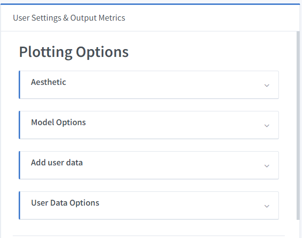
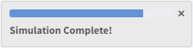
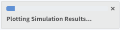
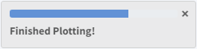
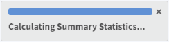
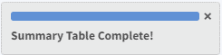
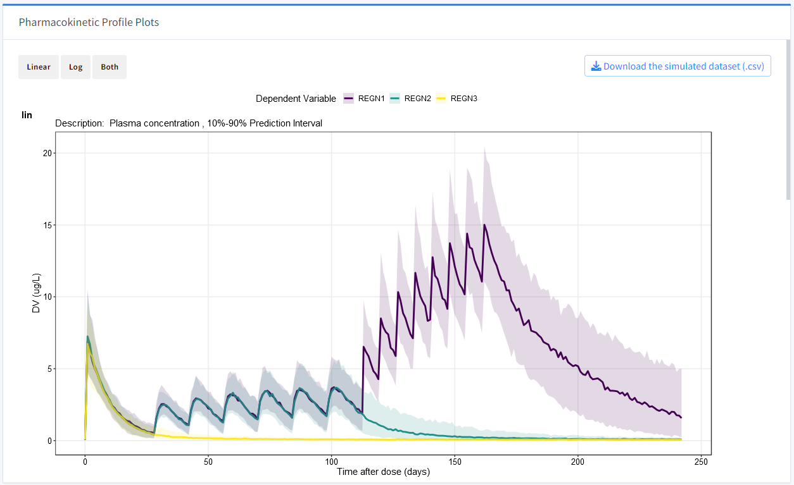
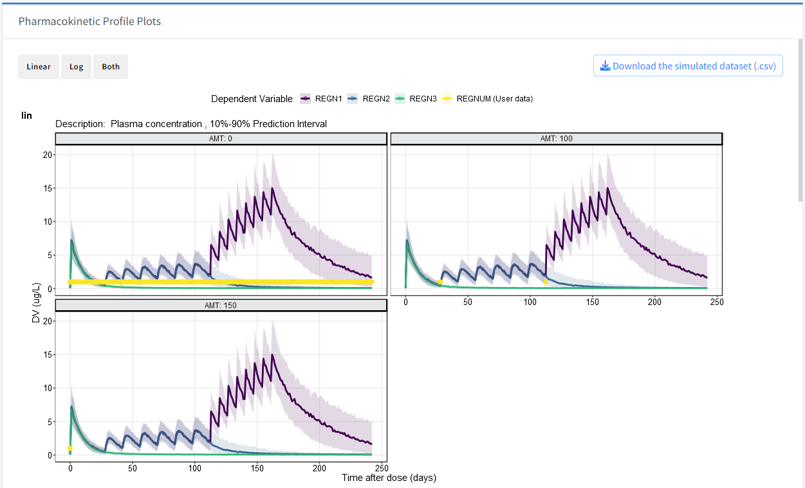
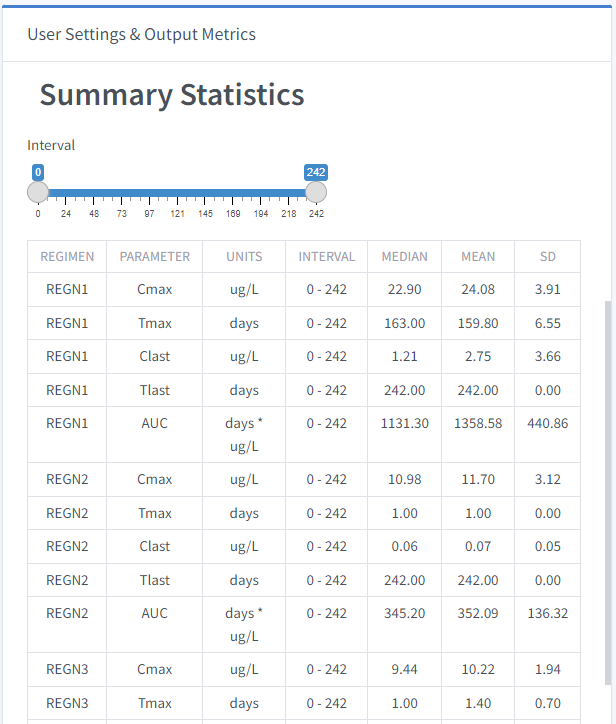

Chapter 5 Simulation Output
This part of the application has options for customizing the simulation outputs and a preview pane that renders the outputs of the simulation after being processed. What is rendered here will be exported to the report.
5.1 User Settings & Output Metrics
5.1.1 Plotting Options

5.1.1.1 Aesthetic
Text Size: Controls the text size of the legend and description.
Transparency: Controls the transparency of the data points of user added data (see section 5.1.1.3)
5.1.1.2 Model Options
Show Prediction Interval: Enables the prediction interval to display on plot (if random effects are added). No variability can be selected. This selection is displayed in the plot description.
Concentration Units: Selection to display the concentration/units on the y-axis.
Select Plot DV: Selection for which dependent variable is to be plotted on y-axis. Note that the annotation of this selection is added to the plot description and is taken from the $CAPTURE @annotated block of the model specification file.
5.1.1.3 Add user data (optional)
This application allows users to visually compare the simulation results to an external dataset.
Column headers should minimally include the following columns: ID, CONCENTRATION, TIME. A DOSE column can be added to stratify the data.
5.1.1.3.1 User Data Options
These options only become available is there is an uploaded dataset by the user.
Select Plot DV User: Choose the desired DV, which should be the same as the DV selected in the simulation model options.
Facet Variable: Allows users to stratify the plots by this selection. An example is shown in section 5.3.
5.2 Start Simulation
Step 4/4 of Simulation Steps
In order to process the Simulation Input Dataset and display simulation results, the Start simulation button should be used.
Transient pop-up messages will appear stating the steps of the simulation in the form of:






5.3 Pharmacokinetic profiles
Pharmacokinetic profile plots are rendered with the selected dependent variable on the y-axis and Time after dose (days) on the x-axis.
Note that there are buttons for Linear, Log, and Both to display accordingly in the Pharmacokinetic Profile Plots section.
A rendering of the simulation output is displayed below. 
A rendering of the simulation output as well as the added user data is displayed below.

Plotting Options can be changed after the simulation is processed but will only render visually to the profiles pane if Start simulation is executed again.

The simulated dataset can be downloaded as a (.csv) file. This dataset is different from the Simulation Input Dataset previously generated because it contains a unique identifier column (REPI) representing the Specify number of simulation iterations setting discussed in Section 4.3.2. Simulation Settings as well as the results for each simulation iteration.
5.4 Summary statistics
Summary statistics provide output metrics of the simulation and are calculated as follows:
PK metrics (Cmax, Tmax, & AUC) are calculated for each subject, and the median value is summarized across subjects within each simulation iteration and dosing regimen. Finally, PK metric summary statistics (median, mean, & standard deviation) are calculated by dosing regimen across the simulation iterations.
Cmax: The maximum concentration of simulated drug
Tmax: The time at which the maximum concentration of drug is achieved
Tlast: The maximum time in the interval
AUC: The Area Under the Curve is calculated following the trapezoid rule from flux::auc()
Users have the ability to control the time at which PK metrics are calculated by using the Interval slider.
